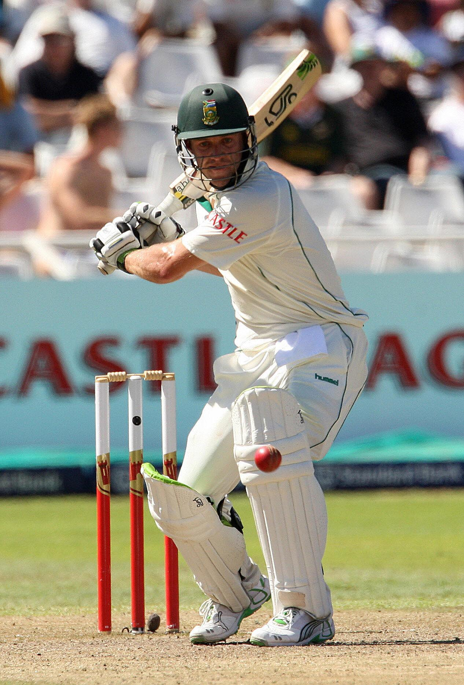

IPL Career
Played for Royal Challengers Bangalore.
Mr. 360° of Cricket
AB de Villiers is a former South African cricketer known for his innovative batting style.

Born on 17 February 1984 in Pretoria, South Africa.
Played for Royal Challengers Bangalore.